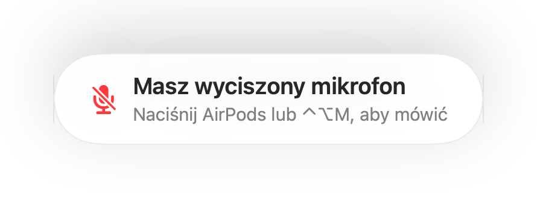
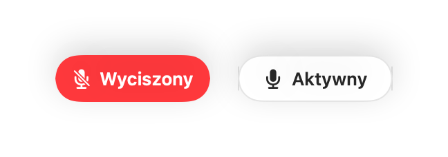
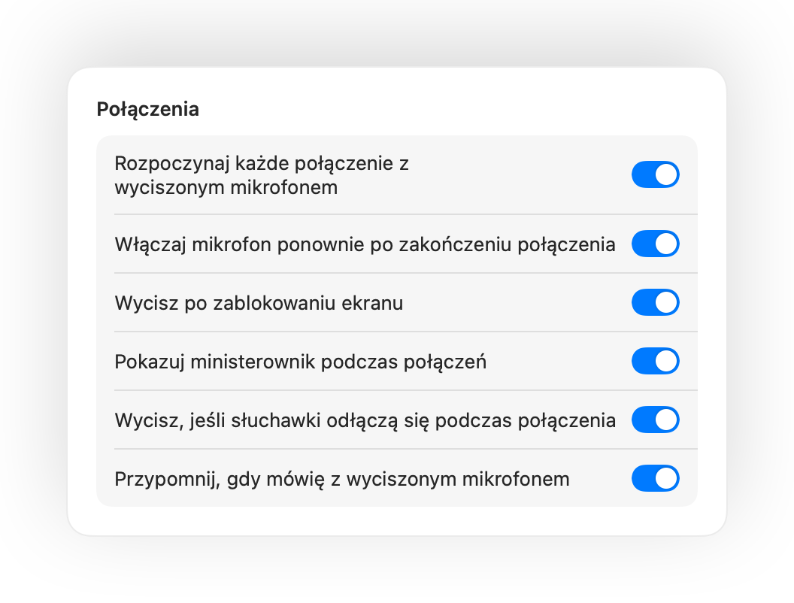

Wycisz mikrofon Maca z dowolnego miejsca.
Naciśnij AirPods lub jeden skrót klawiszowy. Muffle wyłącza sam mikrofon, więc Google Meet, Zoom, Teams, Slack i wszystkie inne aplikacje słyszą ciszę.
Bezpłatny przez 3 dni. Potem jednorazowy zakup, bez subskrypcji. Dla systemu macOS 14 Sonoma i nowszych.

Działa z każdą aplikacją, która korzysta z mikrofonu
- Google Meet
- Zoom
- Microsoft Teams
- Slack
- Discord
- FaceTime
- Webex
- Skype
- SoWork
- Gather
- Chrome
- Safari
- Arc
- Edge
- Firefox
Muffle wycisza mikrofon na poziomie sprzętowym, więc nie ma znaczenia, która aplikacja, przeglądarka czy karta z niego korzysta.
Wszystko, co Twój Mac powinien robić podczas połączenia
Naciśnij AirPods, aby wyciszyć
Podczas dowolnego połączenia naciśnij trzonek raz, aby wyciszyć, i ponownie, aby włączyć mikrofon. Działa to nawet w Chrome, gdzie Google Meet i inne połączenia w przeglądarce ignorują naciśnięcie AirPods.
Jeden skrót do każdej aplikacji
Skrót Control-Opcja-M wycisza mikrofon wszędzie, nawet gdy rozmowa toczy się w karcie w tle. Przytrzymaj go, aby mówić, gdy mikrofon jest wyciszony, i puść, aby wyciszyć go ponownie.
Przypomnienie „Masz wyciszony mikrofon”
Zacznij mówić z wyciszonym mikrofonem, a Muffle Cię powiadomi, zanim wygłosisz cały pomysł w pustkę.
Połączenia na autopilocie
Rozpoczynaj każde połączenie z wyciszonym mikrofonem, włączaj mikrofon ponownie po zakończeniu rozmowy i wyciszaj go po zablokowaniu Maca.
Zawsze wiesz, czy mikrofon jest aktywny
Niewielki ruchomy przycisk pokazuje stan mikrofonu podczas połączeń. Kliknij go, aby wyciszyć lub włączyć mikrofon.
Stały poziom głośności mikrofonu
Chrome, Zoom i Teams potrafią same zmieniać poziom mikrofonu. Zablokuj go, a Muffle przywróci właściwe ustawienie.
Bezpieczeństwo, gdy rozładują się AirPods
Jeśli Twoje słuchawki rozłączą się w trakcie rozmowy, Muffle wyciszy dźwięk, zanim aplikacja przełączy się na mikrofon Maca i wyśle dźwięki z całego pokoju.
Skróty i Centrum sterowania
Wyciszaj z aplikacji Skróty, przez Siri, ze Stream Decka, z Raycast lub za pomocą przycisku w Centrum sterowania.



Konfiguracja w minutę
- Zainstaluj Muffle z Mac App Store i zezwól na dostęp do mikrofonu.
- Dołącz do rozmowy w dowolnej aplikacji, tak jak zwykle.
- Naciśnij AirPods, naciśnij Control-Opcja-M lub kliknij ikonę na pasku menu, aby wyciszyć mikrofon.
Prywatność z założenia
Muffle nigdy nie nagrywa, nie przechowuje ani nie wysyła dźwięku. Jedynie włącza i wyłącza mikrofon oraz odczytuje poziom jego głośności. Żadnych kont, żadnej analityki i żadnego śledzenia.
Pytania
Czy Muffle działa z Google Meet w Chrome?
Tak. Chrome nie przekazuje naciśnięcia AirPods do połączeń w przeglądarce, dlatego Muffle je przechwytuje i wycisza sam mikrofon. To samo dotyczy każdej rozmowy w karcie przeglądarki.
Czy inni uczestnicy zobaczą, że mam wyciszony mikrofon?
Aplikacja do połączeń może nadal pokazywać włączony mikrofon, ponieważ Muffle wyłącza fizyczny mikrofon, a nie przycisk w aplikacji. Uczestnicy i tak słyszą ciszę. Gdy mikrofon jest wyciszony, ikona Muffle na pasku menu zmienia kolor na czerwony.
Które modele AirPods są obsługiwane?
AirPods Pro, AirPods 3 i nowsze oraz AirPods Max, a także modele Beats obsługujące sterowanie połączeniami. Skrót klawiszowy i pasek menu działają z każdym mikrofonem.
Czy to działa z Zoom, Teams, Slack i Discord?
Tak. Muffle działa z każdą aplikacją na Macu korzystającą z mikrofonu, zarówno z programami biurkowymi, jak i połączeniami w przeglądarce.
Czy wymagana jest subskrypcja?
Nie. Wypróbuj wszystkie funkcje bezpłatnie przez 3 dni, a potem odblokuj Muffle jednorazowym zakupem.
Dlaczego Muffle wymaga dostępu do mikrofonu?
macOS przekazuje naciśnięcie AirPods tylko aplikacjom, które korzystają z mikrofonu, dlatego Muffle utrzymuje ciche połączenie podczas rozmów. Nic nie jest nagrywane.
Co się stanie, jeśli zamknę Muffle przy wyciszonym mikrofonie?
Muffle włącza mikrofon ponownie przy zamykaniu, więc nie pozostaniesz bez głosu.
Które wersje systemu macOS są obsługiwane?
macOS 14 Sonoma i nowsze. Przycisk w Centrum sterowania wymaga systemu macOS 26 lub nowszego.
Poradniki
- Jak wyciszyć Google Meet za pomocą AirPods na MacuNaciśnięcie AirPods nie wycisza Google Meet w Chrome na Macu. Sprawdź, jak wyciszyć mikrofon na spotkaniu przez AirPods, skrót klawiszowy lub pasek menu.
- Jak wyciszyć Zoom za pomocą AirPods lub skrótu na MacuWycisz mikrofon w Zoom na Macu przez AirPods lub globalny skrót klawiszowy, nawet gdy okno jest w tle. Idealne rozwiązanie, gdy trwa praca zdalna i konferencja.
- Jak wyciszyć Microsoft Teams za pomocą AirPods na MacuWycisz mikrofon w Microsoft Teams na Macu przez AirPods, skrót klawiszowy lub pasek menu. Działa w aplikacji Teams oraz w przeglądarce podczas każdej rozmowy.
- Jak wyciszyć Slack Huddle z dowolnej aplikacji na MacuWycisz mikrofon w Slack Huddle na Macu z dowolnej aplikacji przez skrót klawiszowy lub AirPods. Koniec ze szukaniem małego okna rozmowy, gdy trwa praca zdalna.
- Naciśnij i mów oraz globalny skrót wyciszania dla Discorda na MacuGlobalny skrót klawiszowy i przycisk Naciśnij i mów dla Discorda na Macu. Wycisz mikrofon słuchawkami AirPods w aplikacji i przeglądarce.
- Jak wyciszyć Webex z dowolnej aplikacji na MacuWycisz spotkanie Webex na Macu jednym globalnym skrótem lub przez AirPods, nawet gdy Webex nie jest aktywnym oknem.
Krótkie, praktyczne wskazówki dotyczące wyciszania mikrofonu na Macu w każdej aplikacji.
Koniec z szukaniem przycisku wyciszania.
Możesz wypróbować Muffle bezpłatnie przez 3 dni.
Wkrótce w Mac App Store